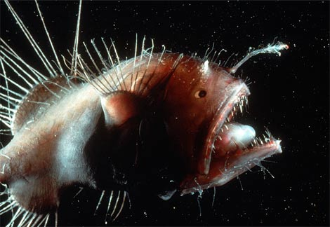
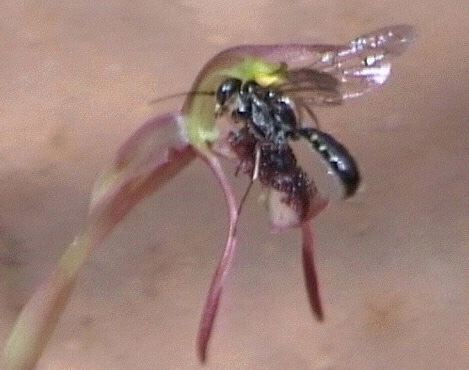
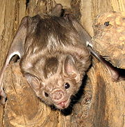

By Warren D. Smith, April 2008
ABSTRACT: S.M.Omohundro in 2007, by building on and/or simplifying ideas by a large number of economists, demonstrated that the philosophy of utilitarianism is forced upon an organism if that organism wishes to be "unexploitable." Exploitable organisms presumably tend to get exploited, suffer a competitive disadvantage, and thus die off over evolutionary time. Hence we should expect, on theoretical grounds, that humans (as the end product of 4 billion years of evolution) ought to be utility-maximizers to a good approximation.
We then consider social utility. By the same reasoning, any society (collection of individuals) must act like a utility maximizer – otherwise it can be exploited by other societies. Thus we would expect, over historical time, that countries/tribes whose decisions are not interpretable as utility-maximizing behavior, would be outcompeted and die out.
Finally we enquire about the relation between the utility functions of societies and their citizens. By either Harsanyi's social aggregation theorem or by a new Omohundro-like argument about "exploitability" (now with a more-powerful kind of exploiter), we deduce that the relation must be that the social utility is a weighted sum (with positive weights) of the utility functions of the citizens.
We also deduce that for any society to be unexploitable, it must employ a collective decision-making process ("voting") to make social decisions based on taking a weighted sum of continuously-variable utility values. Voting systems with discrete votes (Borda, Condorcet, Plurality, Approval, Instant Runoff, etc) are certainly ruled out. This somewhat resembles range voting, but it is not the same thing if, e.g, the citizens can vote dishonestly-strategically. Darwinian evolution on tribes then must encourage tribe-members to vote honestly to avoid their tribe dying out, and this is the presumed cause of the evolution of "moral" behavior which would seem on the surface to be un-utilitarian for individuals.
Omohundro set out his development of utility theory in (of all places) an appendix (pages 37-44) of a 2007 paper titled On the nature of self-improving artificial intelligence. In his opinion, that appendix is an important new insight into the nature, importance, and unavoidability of "utility."
In essence (colloquially phrased), his theorem says this:
THEOREM ("Acting Utilitarian = Being Unexploitable" – informally worded): If an agent does not behave as though it is maximizing expectation of some utility function, then it is subject to (unboundedly large) resource loss with no compensation from the entities to which it loses those resources. (But if it does act utilitarian, then it cannot be thus exploited.)
Omohundro goes through a formal development (he makes quite easy to read and informal-sounding, but it really is formal or can be made so) of what exactly this means and how to prove it. Here are (in abbreviated form) some of the highlights of that argument.
First, any agent foolish enough to have a cyclic preference like A>B>C>A will lose resources to an adversary who "takes it around the cycle." For example, suppose you will pay me a small amount of money to move from A to C. Then you will pay me a small amount of money to move from C to B. Then ditto from B to A. So I can keep extracting money from you forever for nothing.
So: any entity which is not "ridiculously vulnerable" must have transitive (acyclic) preferences on world-states (or anyhow, on tradeable objects).
Second, given a real number α with 0≤α≤1, Omohundro considers owning the probabilistic mixture of two objects A and B with probabilities α and 1-α respectively. (I.e. flip an α-biased coin and get A if heads, otherwise B.) If some entity foolishly misvalues such an α-lottery on A and B (for some 0<α<1) as not equal to αU(A)+(1-α)U(B), then that entity again will be exploitable by a "bookie." Say (wlog) the entity values the mixture too high.
The bookie simply sells the probability-mixture to the entity, then they flip the α-coin to generate that mixed-world-state, and then observe that it is either A or B. Either way, the bookie buys back this object from the foolish entity at a cheaper (expected) price – thus making positive expected amount of money. By the "law of large numbers" from probability theory, this process can be repeated arbitrarily many times to extract arbitrarily large amounts of money with arbitrarily large success probability.
Using a similar argument we conclude: any entity which is not "ridiculously vulnerable" must have utilities on lotteries with are linear combinations of the utilities of their constituents, and the weights in the linear combination must be the same as the probabilities. (Because otherwise, one always could find misvalued lotteries and use them to construct a "dutch book" system of bets which always favor the bookie, but in which the entity would be willing to keep on betting and thus keep on losing.)
Finally: an expected utility maximizer will keep increasing utility (or stay the same), hence cannot enter an infinite loop in which it loses money but otherwise stays the same. Such an organism, in these senses is unexploitable.
If we have acyclic (transitive) preferences and value lotteries via expectation value (and seek to maximize utility) then that is "utilitarianism." Q.E.D.
|  |  |  |
Conclusion: In order to avoid being "ridiculously exploitable" an economic entity must behave as though it has a utility for every world state and must act to maximize probabilistically-expected utility.
Comment: The interesting thing about Omohundro's development of utility is that it hardly depends on any axioms at all. The usual developments by others employ a lot of axioms, but Omohundro really only has one axiom: the notion of avoiding being "ridiculously exploitable."
There also is an underlying model he needs to have, which sort of assumes the existence of "money" and the notion that people are willing to pay money to reach better states (although I suppose this could be defined abstractly-mathematically without need for any "money," it somehow seems to lose force then?). Darwinian evolution causes exploitable organisms to die out, so presumably humans, as the product of Darwinian evolution, must have built in to them, something very much like a utility notion.
Historical Note:
Other mathematicians and economists have constructed arguments to the effect that any "rational"
person must be acting as if he wants to maximize expected utility. These include:
J. von Neumann & O. Morgenstern:
Theory of games and economic behavior.
Princeton: Princeton University Press,
second edition (1947); third (1953).
Maurice Allais, and
Amos Tversky & Daniel Kahneman
have conducted psychological experiments whose results indicate that human behavior is
not that of an expected utility maximizer.
L.J.Savage: The foundations of statistics. New York: Wiley 1954;
second revised edition (1972) New York: Dover Publications.
F.J.Anscombe & R.J.Aumann:
A definition of subjective probability, The Annals of Mathematical Statistics 22 (1963)
199-205.
Jerry Green:
Making book against oneself, the independence axiom, and nonlinear utility theory
(pdf),
Quarterly J. Economics 102,4 (Nov. 1987) 785-796.
A.Tversky & D.Kahneman:
The Framing of Decisions and the Psychology of Choice,
Science 211,4481 (30 Jan. 1981) 453-458.
How much this matters is unclear;
one view might be that humans simply have not evolved enough yet,
and thus still have imperfections and remain exploitable.
C. Camerer:
Individual Decision Making, pp. 587-703 of "The Handbook of Experimental Economics"
(J. Kagel and A. Roth, eds, 1995, Princeton Univ. Press).
We now take a step beyond Omohundro to consider societal rather than individual utilities. Suppose individuals can be grouped into sets called "societies." These societies can make collective decisions to make collective actions, which alter the world-state. We shall assume there is money and that personal utility depends on your wealth (if everything else is held fixed) in a monotonic-increasing manner. We now consider the economic exploitation of one society by another.
By Omohundro's theorem, if a society does not act in a manner consistent with it having a "utility function" on world states and maximizing expected utility, then that society will be "ridiculously exploitable."
So for example, if a society makes collective decisions via a voting system in which Condorcet cycles are possible, then that society is ridiculously exploitable. (Incidentally, not just by rival societies, but also by some agenda-setter within that society...)
With range voting, societies always make decisions that are consistent with a sum of individual "utilities" (actually, range votes are not the same thing as utilities, but that does not matter for the present purpose); a society making decisions via range voting is not exploitable because it does act identically to a society that uses utility maximization with some "utility" function – namely the sum of all the range votes is that function. However we must attach a large asterisk to that conclusion: Of course, with two-candidate range votes and strategic (or anyhow, full-range-using) voting, "Condorcet cycles" are possible (A>B>C>A based on a C:A two-candidate range vote, a B:C vote, and an A:B vote) and hence the society is exploitable. We only can deduce unexploitability if the range vote really includes all possible societal options as "candidates."
HARSANYI'S SOCIAL AGGREGRATION THEOREM:
Then:
the social utility is a linear combination (i.e. weighted sum)
of the individual utility functions, with all-positive weights.
Further, if there exists, for each citizen, an event in A affecting him alone,
then the weights are unique up to an overall rescaling.
Historical note:
This theorem has been restated in different forms and reproved many times.
The original statement and proof was by
John C. Harsanyi:
Cardinal welfare, individualistic ethics, and interpersonal comparisons of utility,
J.Political Economy 63 (1955) 309-321
but his proof was invalid
because it depended on
an unstated assumption.
Repaired theorems and proofs were then presented by
Peter C. Fishburn:
On Harsanyi's Utilitarian Cardinal Welfare Theorem,
Theory & Decision 17 (1984) 21-28
We have based
our theorem statement and this historical discussion on
Theorem 8 of
Kim C. Border 1981 unpublished notes at CalTech
Kim C. Border:
More on Harsanyi's utilitarian cardinal welfare theorem,
Social Choice & Welfare 1 (1985) 279-281
Zoltan Domotor:
Ordered sum and tensor product of linear utility structures,
Theory & Decision 11 (1979) 375-399
T.Coulhon & P.Mongin:
Social Choice Theory in the Case of von Neumann-Morgenstern Utilities,
Social Choice & Welfare 6 (1989) 175-187
John A. Weymark 1990 discussion paper at Univ. of British Columbia.
John A. Weymark:
The Harsanyi-Sen Debate on utilitarianism, on p. 277 of the book-length collection,
"Interpersonal Comparisons of Well-Being,"
(Jon Elster & John E. Roemer, eds, Cambridge Univ. Press 1991).
Suppose the societal utility function differs from the sum of the utility functions of its individuals. By "differs," we mean, for any positively-weighted sum of individual utilities, there is some finite subset of events which are ordered one way by society, but the weighted-sum orders them in some different way.
We then claim this society is ridiculously exploitable – but in a different sense – the exploiter must now have the power both to make deals with society as a whole, and with all the individuals in that society. (Call this harder-working kind of exploiter, a "rabble-rousing exploiter" and the old, lazy, kind is a "plain" exploiter.) Why?
To exploit it, I act thusly. First I sell the society the move from B (present state) to new societally-preferred state A. Next, I sell to its individuals the chance to move back to state B (which their positively-weighted-sum of utilities prefers). The "positive weighting" I choose is the one corresponding to the following amounts of money: suppose citizen i is willing to pay me some small amount Mi of money if I move us from A to a lottery consisting of a very small probability of B and a large probability of staying at A – where Mi might be negative and might depend on the individual i, but summed over all i, is positive. I claim some A, B, and such a money-vector must simultaneously exist.
If in a preliminary step we make everybody's wealth be "generic reals" (by offering society a deal where a certain small random amount of money is extracted from everybody then redistributed in a randomized way with a small bonus) then we can use H.Lebesque's theorem that a monotonic function is differentiable almost everywhere. Given that we are at a differentiable wealth-point, any small-enough multiple of the utility (money) vector will serve as the weights, for a lottery with a small-enough chance of moving to B.
Anyhow, if they do exist, then I can keep exploiting the society in this way to make money forever for (in net) doing nothing.
Amartya Sen (another Nobel laureate in economics) proved a theorem which is somewhat the "opposite" of Harsanyi's theorem. It says that if your voting procedure is foolishly based purely on rank orderings (A>B>C) instead of (which would be wiser) continuum utilities [util(A)=943] then we're dead. More precisely:
Axiom ML ("minimal liberalism"): each voter is decisive (a dictator) over some alternative-pair.
The point of ML is you alone should have the right to decide what shoes to wear today. It says there are some individual rights.
SEN'S THEOREM: Suppose #voters≥2, #candidates≥3 (equivalently #social alternatives≥3), each voter has a rank order for any subset of alternatives ("unrestricted domain"), and the social-choice method satisfies both ML and Pareto (Pareto meaning if all voters unanimously prefer A>B then so does society). Then: the social choice method's output will sometimes include preference cycles.
Another theorem of this ilk is Arrow's theorem.
The usual voting systems proposals found in political science books (Borda, Condorcet, Plurality, Approval, Instant Runoff, etc) all immediately are seen to yield exploitable societies.
Range voting might be thought to avoid that fate – and indeed we have seen that it does if we restrict attention to plain exploiters and if the citizens employ their utility functions (or arbitrary fixed transformations of them which preserve their abstract validity as utility functions) as their votes.
However, if the citizens can vote strategically-dishonestly, then they might, e.g, employ non-fixed transformations – and we get an exploitable society. (And if they employ any transformations at all, then we get a society exploitable by a rabble-rousing exploiter.) And indeed we might expect this behavior from utility-maximizing citizens.
On the other hand, over evolutionary time, supposing now that not only do citizens procreate and evolve, but in fact so do entire societies (which themselves can compete, be wiped out like Carthage by Rome, etc; the citizens mate solely or almost solely with co-citizens of the same society; call this the "tribal model") then Darwinian evolution would favor societies whose citizens have a gene influencing them to vote honestly.
This argument is presumably the reason that it is often found, experimentally, that humans do act honestly, do not steal, or behave according to moral principles – even when that might not seem to be the right move in an individual-utilitarian sense. (I might even go so far as to replace the word "often" with "usually.") For example:
The tribal model is of course far more valid for honeybees than it is for humans. And sure enough, it turns out that (1) honeybees employ range voting, and (2) no evidence is known that they do so in a strategic-dishonest manner.
For citizens who however lack honesty/altruism genes, something like Clarke-Tideman-Tullock voting – designed to try to cause the economically-rational vote to be honest – might seem needed to prevent a society from being ridiculously exploitable. However, that solution is inadequate because, e.g, it is rational for colluder-teams to vote dishonestly using CTT voting (and also because "Clarke taxes" represent a loss for that society). No voting method is known, and there is good reason to believe none exists, which will yield an unexploitable society in the presence of economically-rational possibly-colluding voters.
The reader may console herself that range voting in the presence of strategic voters essentially degenerates to become "approval voting." Since approval is still a pretty good voting system, this is not a severe loss of quality.
I thank Prof. Marcus Pivato for educating me a lot.
{kind=link}
{kind=link}
{kind=link}
{kind=link}
{kind=link}